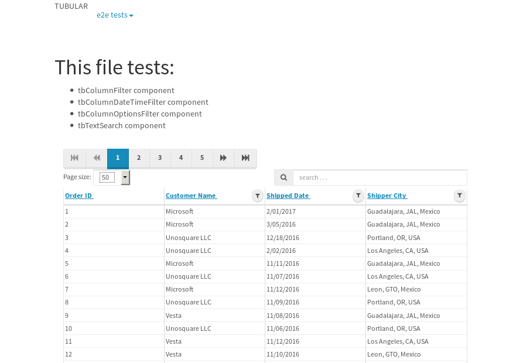
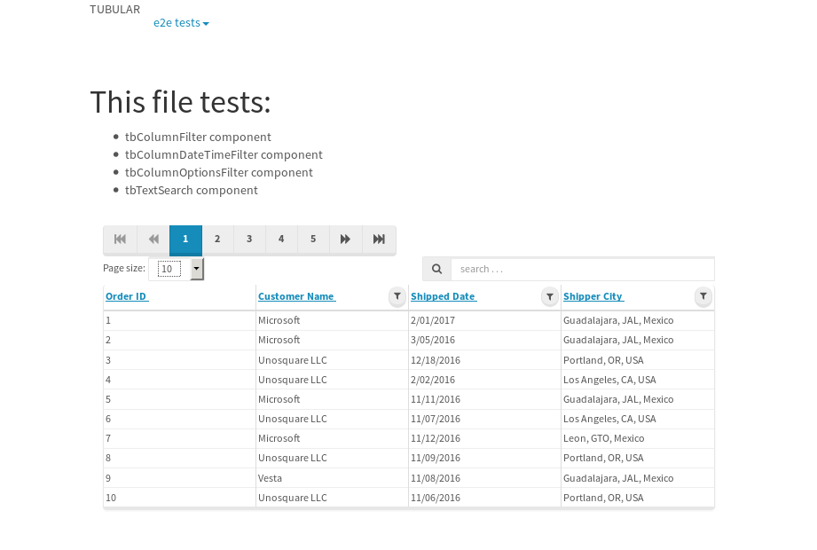
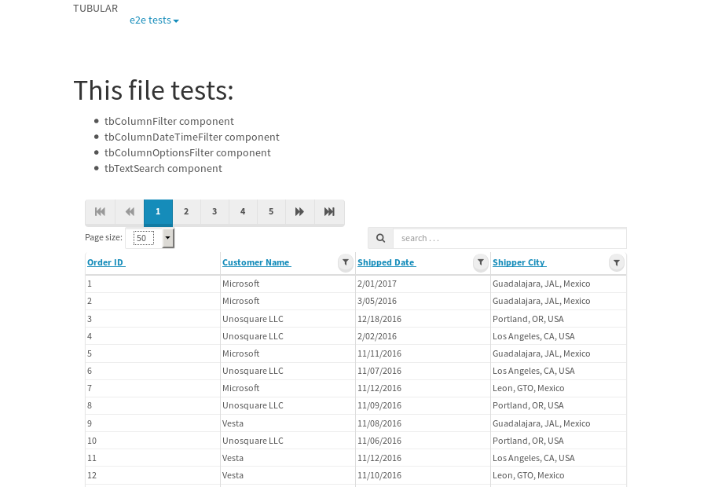
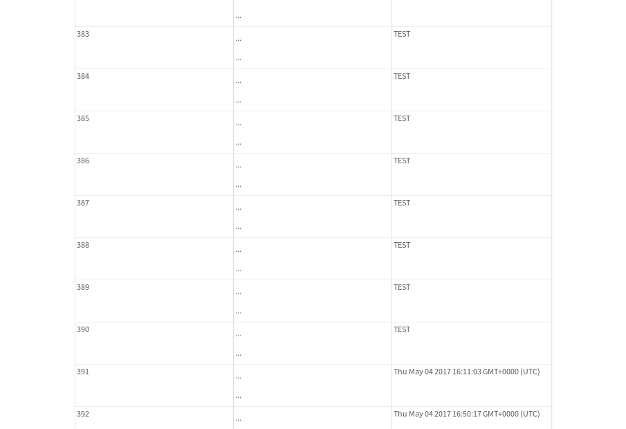
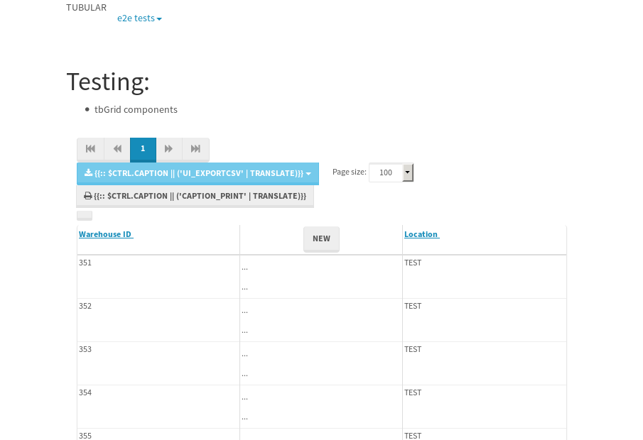

tbColumn.Grid Sorting - 175.479sTests: 5Skipped: 0Failures: 3 should sort data in ascending order then on descending order when sorting by Order Id column - 43.895sExpected '1' to be '500'.✗Expected '20' to be '481'.✗Tests passed: 50.00%should order data in ascending order when click-sorting an unsorted text column - 22.911sTests passed: 100.00%should order data in descending order when click-sorting an ascending-sorted text column - 42.828sExpected 'Advanced Technology Systems' to be 'Vesta'.✗Tests passed: 0.00%should order data in ascending order when click-sorting an unsorted date column - 22.863sTests passed: 100.00%should order data in descending order when click-sorting twice an unsorted date column - 42.973sExpected '12/30/2015' to match /1\/01\/2016/.✗Tests passed: 0.00%
tbEmptyForm - 2.341sTests: 3Skipped: 0Failures: 0 should have an empty required field - 0.67sTests passed: 100.00%should not be able to click on save - 0.03sTests passed: 100.00%should load default value for numeric field - 0.029sTests passed: 100.00%
Tubular Filters.tbColumnFilter - 12.994sTests: 12Skipped: 0Failures: 12 should cancel filtering when clicking outside filter-popover - 0.94sFailed: No element found using locator: By(css selector, tb-column-filter form.tubular-column-filter-form)✗Failed: No element found using locator: By(css selector, tb-column-filter form.tubular-column-filter-form)✗Tests passed: 0.00%should disable Value text-input for "None" filter - 0.28sFailed: No element found using locator: By(css selector, tb-column-filter form.tubular-column-filter-form)✗Failed: No element found using locator: By(css selector, tb-column-filter form.tubular-column-filter-form)✗Tests passed: 0.00%should disable apply button for "None" filter - 0.263sFailed: No element found using locator: By(css selector, tb-column-filter form.tubular-column-filter-form)✗Failed: No element found using locator: By(css selector, tb-column-filter form.tubular-column-filter-form)✗Tests passed: 0.00%should decorate popover button when showing data is being filtered for its column - 0.303sFailed: No element found using locator: By(css selector, tb-column-filter form.tubular-column-filter-form)✗Failed: No element found using locator: By(css selector, tb-column-filter form.tubular-column-filter-form)✗Tests passed: 33.33%should correctly filter data for the "Equals" filtering option - 0.287sFailed: No element found using locator: By(css selector, tb-column-filter form.tubular-column-filter-form)✗Failed: No element found using locator: By(css selector, tb-column-filter form.tubular-column-filter-form)✗Tests passed: 0.00%should correctly filter data for the "Not Equals" filtering option - 0.253sFailed: No element found using locator: By(css selector, tb-column-filter form.tubular-column-filter-form)✗Failed: No element found using locator: By(css selector, tb-column-filter form.tubular-column-filter-form)✗Tests passed: 0.00%should correctly filter data for the "Contains" filtering option - 0.265sFailed: No element found using locator: By(css selector, tb-column-filter form.tubular-column-filter-form)✗Failed: No element found using locator: By(css selector, tb-column-filter form.tubular-column-filter-form)✗Tests passed: 0.00%should correctly filter data for the "Not Contains" filtering option - 0.266sFailed: No element found using locator: By(css selector, tb-column-filter form.tubular-column-filter-form)✗Failed: No element found using locator: By(css selector, tb-column-filter form.tubular-column-filter-form)✗Tests passed: 0.00%should correctly filter data for the "Starts With" filtering option - 0.254sFailed: No element found using locator: By(css selector, tb-column-filter form.tubular-column-filter-form)✗Failed: No element found using locator: By(css selector, tb-column-filter form.tubular-column-filter-form)✗Tests passed: 0.00%should correctly filter data for the "Not Starts With" filtering option - 0.252sFailed: No element found using locator: By(css selector, tb-column-filter form.tubular-column-filter-form)✗Failed: No element found using locator: By(css selector, tb-column-filter form.tubular-column-filter-form)✗Tests passed: 0.00%should correctly filter data for the "Ends With" filtering option - 0.246sFailed: No element found using locator: By(css selector, tb-column-filter form.tubular-column-filter-form)✗Failed: No element found using locator: By(css selector, tb-column-filter form.tubular-column-filter-form)✗Tests passed: 0.00%should correctly filter data for the "Not Ends With" filtering option - 0.268sFailed: No element found using locator: By(css selector, tb-column-filter form.tubular-column-filter-form)✗Failed: No element found using locator: By(css selector, tb-column-filter form.tubular-column-filter-form)✗Tests passed: 0.00%
Tubular Filters.tbColumnDateTimeFilter - 10.133sTests: 12Skipped: 0Failures: 12 should cancel filtering when clicking outside filter-popover - 0.41sFailed: No element found using locator: By(css selector, tb-column-date-time-filter form.tubular-column-filter-form)✗Failed: No element found using locator: By(css selector, tb-column-date-time-filter form.tubular-column-filter-form)✗Tests passed: 0.00%should disable Value text-input for "None" filter - 0.25sFailed: No element found using locator: By(css selector, tb-column-date-time-filter form.tubular-column-filter-form)✗Failed: No element found using locator: By(css selector, tb-column-date-time-filter form.tubular-column-filter-form)✗Tests passed: 0.00%should disable apply button for "None" filter - 0.278sFailed: No element found using locator: By(css selector, tb-column-date-time-filter form.tubular-column-filter-form)✗Failed: No element found using locator: By(css selector, tb-column-date-time-filter form.tubular-column-filter-form)✗Tests passed: 0.00%should clear filtering when clicking on Clean button - 0.383sFailed: No element found using locator: By(css selector, tb-column-date-time-filter form.tubular-column-filter-form)✗Failed: No element found using locator: By(css selector, tb-column-date-time-filter form.tubular-column-filter-form)✗Tests passed: 0.00%should decorate popover button when showing data is being filtered for its column - 0.257sFailed: No element found using locator: By(css selector, tb-column-date-time-filter form.tubular-column-filter-form)✗Failed: No element found using locator: By(css selector, tb-column-date-time-filter form.tubular-column-filter-form)✗Tests passed: 33.33%should correctly filter data for the "Equals" filtering option - 0.253sFailed: No element found using locator: By(css selector, tb-column-date-time-filter form.tubular-column-filter-form)✗Failed: No element found using locator: By(css selector, tb-column-date-time-filter form.tubular-column-filter-form)✗Tests passed: 0.00%should correctly filter data for the "Not Equals" filtering option - 0.228sFailed: No element found using locator: By(css selector, tb-column-date-time-filter form.tubular-column-filter-form)✗Failed: No element found using locator: By(css selector, tb-column-date-time-filter form.tubular-column-filter-form)✗Tests passed: 0.00%should correctly filter data for the "Between" filtering option - 0.253sFailed: No element found using locator: By(css selector, tb-column-date-time-filter form.tubular-column-filter-form)✗Failed: No element found using locator: By(css selector, tb-column-date-time-filter form.tubular-column-filter-form)✗Tests passed: 0.00%should correctly filter data for the "Greater-or-equal" filtering option - 0.258sFailed: No element found using locator: By(css selector, tb-column-date-time-filter form.tubular-column-filter-form)✗Failed: No element found using locator: By(css selector, tb-column-date-time-filter form.tubular-column-filter-form)✗Tests passed: 0.00%should correctly filter data for the "Greater" filtering option - 0.242sFailed: No element found using locator: By(css selector, tb-column-date-time-filter form.tubular-column-filter-form)✗Failed: No element found using locator: By(css selector, tb-column-date-time-filter form.tubular-column-filter-form)✗Tests passed: 0.00%should correctly filter data for the "Less-or-equal" filtering option - 0.232sFailed: No element found using locator: By(css selector, tb-column-date-time-filter form.tubular-column-filter-form)✗Failed: No element found using locator: By(css selector, tb-column-date-time-filter form.tubular-column-filter-form)✗Tests passed: 0.00%should correctly filter data for the "Less" filtering option - 0.235sFailed: No element found using locator: By(css selector, tb-column-date-time-filter form.tubular-column-filter-form)✗Failed: No element found using locator: By(css selector, tb-column-date-time-filter form.tubular-column-filter-form)✗Tests passed: 0.00%
Tubular Filters.tbColumnOptionsFilter - 7.223sTests: 3Skipped: 0Failures: 3 should cancel filtering when clicking outside filter-popover - 0.787sFailed: No element found using locator: By(css selector, tb-column-options-filter form.tubular-column-filter-form)✗Failed: No element found using locator: By(css selector, tb-column-options-filter form.tubular-column-filter-form)✗Tests passed: 0.00%should decorate popover button when showing data is being filtered for its column - 0.274sFailed: No element found using locator: By(css selector, tb-column-options-filter form.tubular-column-filter-form)✗Failed: No element found using locator: By(css selector, tb-column-options-filter form.tubular-column-filter-form)✗Tests passed: 33.33%should filter column-elements in accordance to the selected filter when selecting a single option - 0.239sFailed: No element found using locator: By(css selector, tb-column-options-filter form.tubular-column-filter-form)✗Failed: No element found using locator: By(css selector, tb-column-options-filter form.tubular-column-filter-form)✗Tests passed: 0.00%
Tubular Filters.tbTextSearch - 43.168sTests: 5Skipped: 0Failures: 0 min-chars is not set - 0.062sTests passed: 100.00%should filter data in searchable-column customer name to matching inputted text, starting from 3 characters - 5.741sTests passed: 100.00%should filter data in searchable-column shipper city to matching inputted text, starting from 3 characters - 10.82sTests passed: 100.00%should show clear button when there is inputted text only - 5.529sTests passed: 100.00%should clear filtering when clicking clear button - 15.287sTests passed: 100.00%
tbForm related components.tbCheckboxField - 20.355sTests: 2Skipped: 0Failures: 1 should save changes on "SAVE" - 18.076sExpected 51 to be -1.✗Tests passed: 50.00%should discard changes on "CANCEL" - 0.809sTests passed: 100.00%
tbForm related components.tbDropDownEditor - 21.407sTests: 5Skipped: 0Failures: 0 should set initial input value to the value of "value" attribute when defined - 0.736sTests passed: 100.00%should show the component name value in a label field when "showLabel" attribute is true - 0.682sTests passed: 100.00%should show a help field equal to this attribute, is present - 0.676sTests passed: 100.00%should submit modifications to item/server when clicking form "Save" - 17.833sTests passed: 100.00%should NOT submit modifications to item/server when clicking form "Cancel" - 0.948sTests passed: 100.00%
tbForm related components.tbTextArea - 23.633sTests: 7Skipped: 0Failures: 0 should set initial input value to the value of "value" attribute when defined - 0.634sTests passed: 100.00%should be invalidated when the number of chars is not in the range of "min" and "max" attributes - 1.098sTests passed: 100.00%should show the component name value in a label field when "showLabel" attribute is true - 0.673sTests passed: 100.00%should show a help field equal to this attribute, is present - 0.658sTests passed: 100.00%should require the field when the attribute "required" is true - 0.773sTests passed: 100.00%should submit modifications to item/server when clicking form "Save" - 18.153sTests passed: 100.00%should NOT submit modifications to item/server when clicking form "Cancel" - 1.086sTests passed: 100.00%
tbForm related components.tbDateEditor - 23.091sTests: 6Skipped: 0Failures: 0 should set initial date value to the value of "value" attribute when defined - 0.724sTests passed: 100.00%should be invalidated when the date is not in the range of "min" and "max" attributes - 1.173sTests passed: 100.00%should show the component name value in a label field when "showLabel" attribute is true - 0.673sTests passed: 100.00%should show a help field equal to this attribute, is present - 0.576sTests passed: 100.00%should submit modifications to item/server when clicking form "Save" - 17.781sTests passed: 100.00%should NOT submit modifications to item/server when clicking form "Cancel" - 1.15sTests passed: 100.00%
tbForm related components.tbTypeaheadEditor - 26.621sTests: 7Skipped: 0Failures: 1 should show an options list when there is an API-info/component entered-data - 1.44sTests passed: 100.00%should select the option clicked - 1.051sTests passed: 100.00%should show a "delete" button when an option/match is selected, and delete the option if button is clicked - 1.681sTests passed: 100.00%should show a label value equal to the component name when "showLabel" attribute is true - 0.863sTests passed: 100.00%should require a value when "require" attribute is true - 1.215sTests passed: 100.00%should submit modifications to item/server when clicking form "Save" - 18.169sExpected 'Guadalajara, JAL, Mexico' to match 'Portland, OR, USA'.✗Tests passed: 0.00%should NOT submit modifications to item/server when clicking form "Cancel" - 1.387sTests passed: 100.00%
tbForm related components.tbSimpleEditor - 24.971sTests: 9Skipped: 0Failures: 0 should set initial input value to the value of "value" attribute when defined - 0.632sTests passed: 100.00%should be invalidated when the number of chars is not in the range of "min" and "max" attributes - 1.017sTests passed: 100.00%should show the component name value in a label field when "showLabel" attribute is true - 0.636sTests passed: 100.00%should set input placeholder to the value of "placeholder" attribute - 0.752sTests passed: 100.00%should validate the control using the "regex" attribute, if present - 0.811sTests passed: 100.00%should show a help field equal to this attribute, is present - 0.747sTests passed: 100.00%should require the field when the attribute "required" is true - 0.734sTests passed: 100.00%should submit modifications to item/server when clicking form "Save" - 18.003sTests passed: 100.00%should NOT submit modifications to item/server when clicking form "Cancel" - 0.977sTests passed: 100.00%
tbForm related components.tbNumericEditor - 22.989sTests: 7Skipped: 0Failures: 0 should set initial component value to the value of "value" attribute when defined - 0.61sTests passed: 100.00%should be invalidated when the entered number is not in the range of "min" and "max" attributes - 1.153sTests passed: 100.00%should show the component name value in a label field when "showLabel" attribute is true - 0.642sTests passed: 100.00%should show a help field equal to this attribute, is present - 0.663sTests passed: 100.00%should require the field when the attribute "required" is true - 0.747sTests passed: 100.00%should submit modifications to item/server when clicking form "Save" - 17.751sTests passed: 100.00%should NOT submit modifications to item/server when clicking form "Cancel" - 0.826sTests passed: 100.00%
tbForm Connection Error NoModelKey - 1.942sTests: 1Skipped: 0Failures: 0 tbForm connection error functionality - 0.003sTests passed: 100.00%
tbForm Connection Error NoServerUrl - 1.769sTests: 1Skipped: 0Failures: 0 tbForm connection error functionality - 0.002sTests passed: 100.00%
tbGridComponents - 6.628sTests: 6Skipped: 0Failures: 4 should add item with newRow method - 3.456sTests passed: 100.00%should add item with newRow method and cancel action - 0.39sTests passed: 100.00%should update item with tbSaveButton - 0.285sFailed: Element is not currently interactable and may not be manipulated✗Tests passed: 0.00%should NOT update item on cancel Update action - 0.572sFailed: Element is not visible✗Tests passed: 0.00%should remove item with tbRemoveButton - 0.282sFailed: No element found using locator: By(css selector, div.popover)✗Tests passed: 0.00%should NOT remove item on cancel Remove action - 0.268sFailed: No element found using locator: By(css selector, div.popover)✗Tests passed: 0.00%
tbGridPager.navigation buttons - 2.986sTests: 1Skipped: 0Failures: 0 should perform no action when clicking on the numbered navigation button corresponding to the current-showing results page - 1.141sTests passed: 100.00%
tbGridPager.navigation buttons.first/non-last results page related functionality - 0.669sTests: 2Skipped: 0Failures: 0 should disable "first" and "previous" navigation buttons when in first results page - 0.098sTests passed: 100.00%should enable "last" and "next" navigation buttons when in a results page other than last - 0.571sTests passed: 100.00%
tbGridPager.navigation buttons.last/non-first results page related functionality - 1.175sTests: 2Skipped: 0Failures: 0 should disable "last" and "next" navigation buttons when in last results page - 0.544sTests passed: 100.00%should enable "first" and "previous" navigation buttons when in a results page other than first - 0.631sTests passed: 100.00%
tbGridPager.page navigation - 3.831sTests: 5Skipped: 0Failures: 0 should go to next results page when clicking on next navigation button - 1.108sTests passed: 100.00%should go to previous results page when clicking on previous navigation button - 1.039sTests passed: 100.00%should go to last results page when clicking on last navigation button - 0.639sTests passed: 100.00%should go to first results page when clicking on first navigation button - 0.537sTests passed: 100.00%should go to corresponding results page when clicking on a numbered navigation button - 0.507sTests passed: 100.00%
tbGridPagerInfo - 4.053sTests: 2Skipped: 0Failures: 0 should show text in accordance to numbered of filter rows and current results-page - 1.755sTests passed: 100.00%should show count in footer - 0.028sTests passed: 100.00%
tbPageSizeSelctor - 12.218sTests: 4Skipped: 0Failures: 0 should filter up to 10 data rows per page when selecting a page size of "10" - 2.465sTests passed: 100.00%should filter up to 20 data rows per page when selecting a page size of "20" - 2.181sTests passed: 100.00%should filter up to 50 data rows per page when selecting a page size of "50" - 3.344sTests passed: 100.00%should filter up to 100 data rows per page when selecting a page size of "100" - 2.775sTests passed: 100.00%
tbSingleForm - 12.88sTests: 8Skipped: 1Failures: 1 should load correct info - 0s***Skipped***Tests passed: 0%should change customer name - 1.848sTests passed: 100.00%should save it - 2.022sExpected '' to be 'Saved'.✗Tests passed: 50.00%should clear the inputs - 1.765sTests passed: 100.00%should update - 2.029sTests passed: 100.00%should reset editor - 1.774sTests passed: 100.00%should not save if not Changes - 1.711sTests passed: 100.00%should not be able to click on save - 1.73sTests passed: 100.00%


{kind=link}
{kind=link}
{kind=link}
{kind=link}
{kind=link}